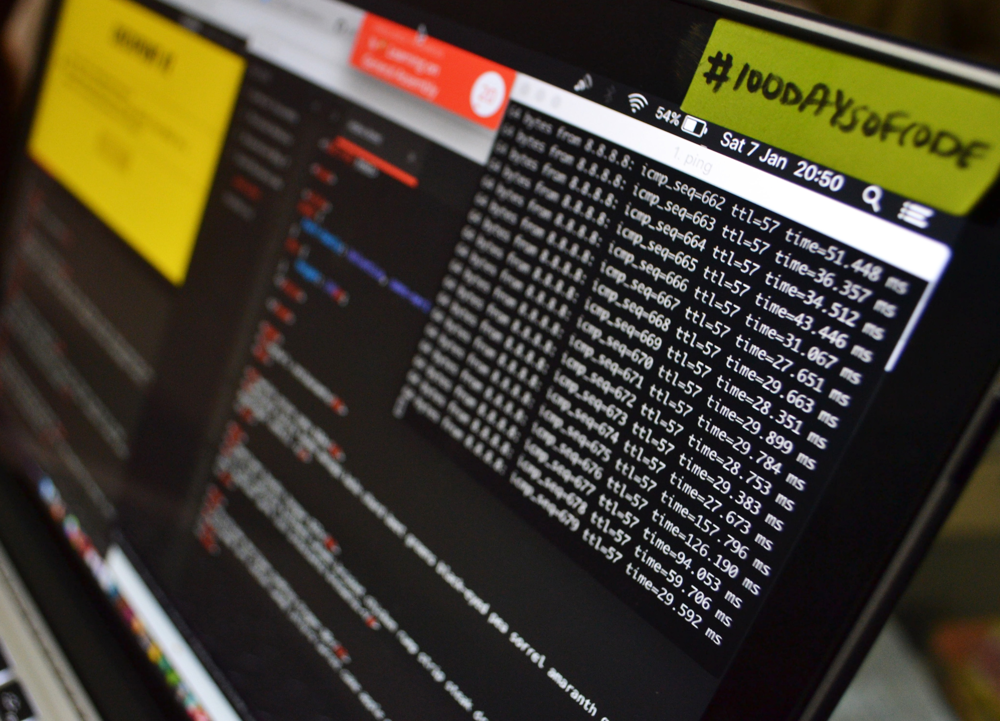

나는 미술전시회를 갈 때마다 관람객이 작품을 어떻게 감상하는지 관찰하는 경향이 있다. 관객들은 각자 다양한 방법으로 작품을 감상했는데 그들에게 직접 물어보지 않는 이상 그들이 어떤 생각을 하는지 알 수 있는 방법이 전무했다. 작가의 일방적인 표현으로 가득한 대부분의 전시장 안에서 관객이 전시의 주체가 되어 자기 생각을 표현할 기회를 가질 수 있는 경우가 드물었기 때문이다. 전시장과 달리 일상에서 자주 접하는 공중화장실 칸막이에는 작가와 관객이 따로 없고 실시간으로 다른 낙서가 추가된다. 칸막이는 익명성이 보장된 일종의 광장이 되는 것이다. 전시장에서 작가가 현학적인 표현으로 관객과의 소통을 시도할 때 공중화장실에서는 이미 낙서라는 형태로 쌍방향적인 소통을 실현하고 있었다.
공중화장실이라는 음침한 공간이 아니라 전시장을 관객들의 표현공간으로 만들고 싶었다. 그래서 관객들에게 자신의 생각을 표현하기에 편안한 환경을 제공하기 위하여 몇 가지 방법을 고찰하였다. 그 결과 내가 매일 영감이 떠오를 때마다 그리는 드로잉 일기를 전시장 안에서 소통의 화두로 활용해보았다. 나의 드로잉이 질문이라면 관객이 그리는 드로잉은 대답이 될 수도 있었고 또 다른 질문이 될 수도 있었다. 드로잉을 표현수단으로 삼은 이유는 내 경험상 가장 쉽고 편안한 방법이었기 때문이다. 또한 드로잉은 낙서가 될 수도 있고 짤막한 시가 될 수도 있는 자유로운 형식이기 때문에 주체의 자율성이 거의 무한대에 가깝다. 관객들은 드로잉을 단순한 방명록으로 사용하기도 했고 광고수단으로 사용하기도 하였는데 관객들의 활발한 참여로 인해 실시간으로 계속 바뀌는 드로잉들은 내가 매번 전시장을 들릴 때마다 신선한 재미를 선사하였다. 2017년 5월에 처음 시작한 관객이 그리는 드로잉 전시는 2017년 11월과 2017년 12월까지 3차례 이어졌다. 그동안 관객들은 3500여장의 드로잉을 남기며 전시장을 가득 메웠다.